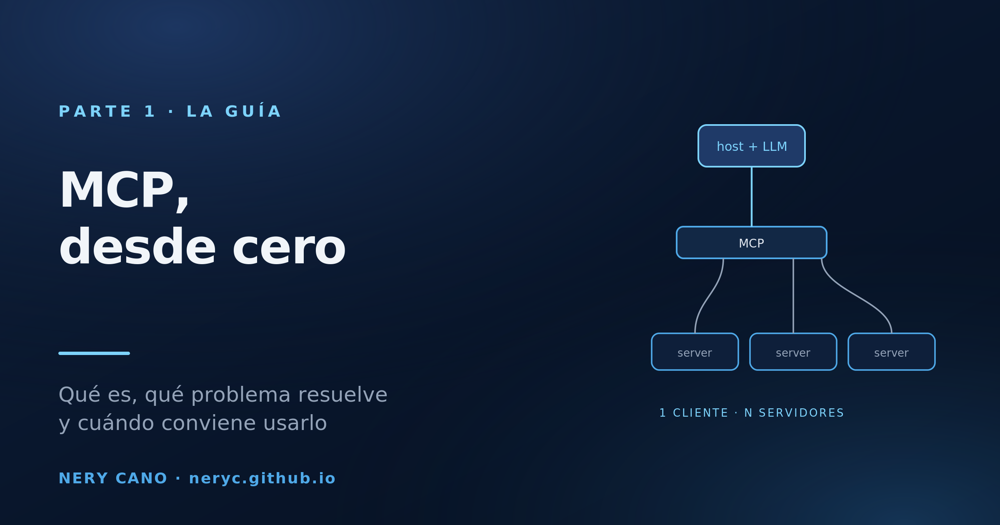
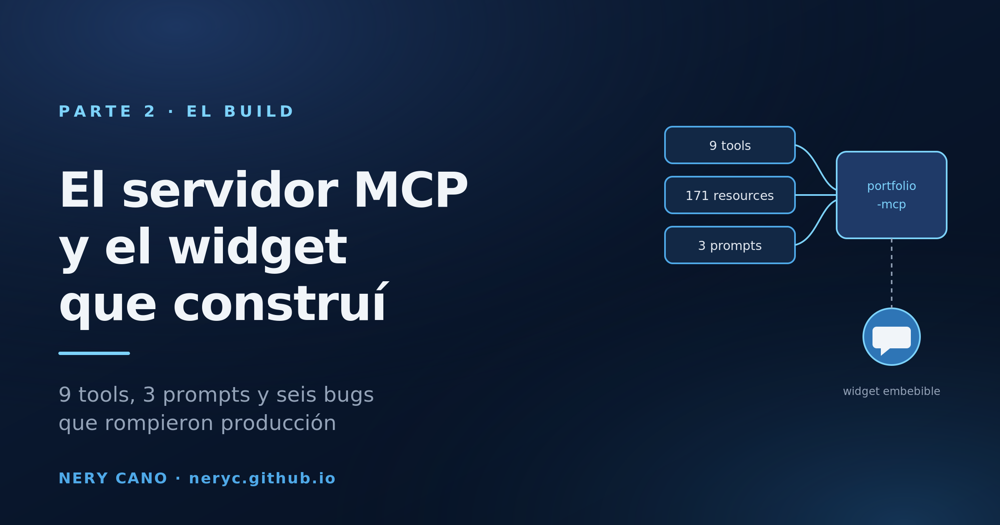
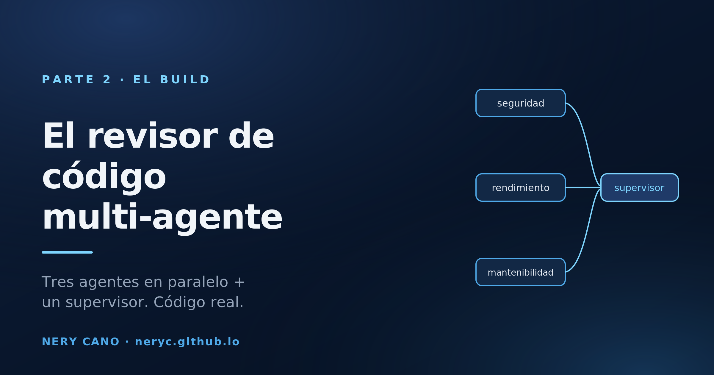
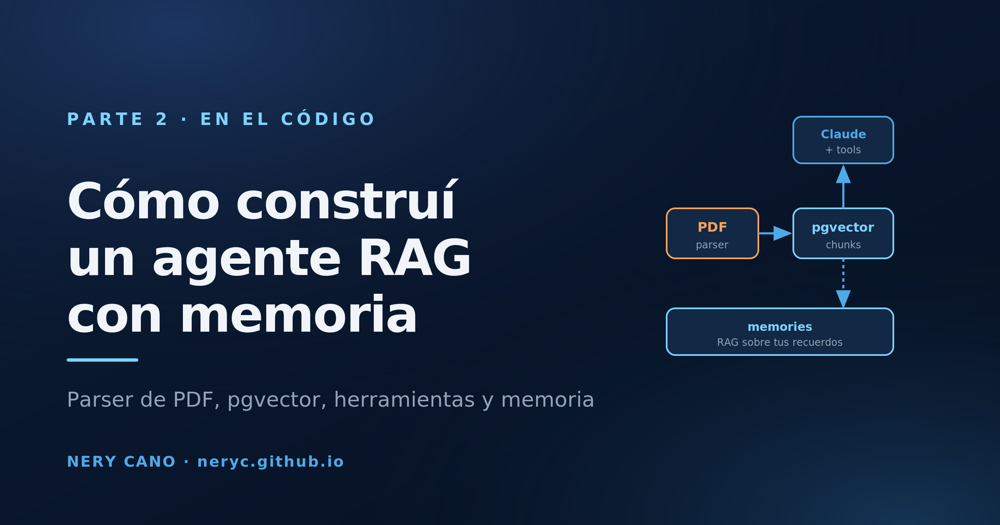

Notas de ingeniería desde adentro.
Análisis a fondo, de nivel producción, sobre sistemas de IA/LLM que he lanzado: qué construí, qué aprendí y las decisiones que defendería en un code review.

MCP desde cero: qué es, qué problema resuelve y cuándo usarlo
Un protocolo, tres primitivas y un saludo obligatorio. Todo lo que hay que entender de MCP antes de escribir una línea de código.

Talk to My Portfolio: el servidor MCP y el widget que construí
Un servidor MCP sobre mi CV y un widget de 14 KB que lo embebe en cualquier sitio. El código real, y los seis bugs que rompieron producción.

Harness Engineering: cómo diseñar repos donde la IA no la caga
Guías, sensores, contexto, evals y límites de autonomía: el arnés que convierte a un agente de IA de pasante caótico en colega fiable. Spoiler: el problema es tu repo, no el modelo.

Harness engineering en un SaaS real: medí, escribí las reglas, volví a medir
Le di a un agente cinco commits reales de mi SaaS multi-tenant y no le dije nada sobre el dominio. Inventó una política de permisos, la equivocó, y escribió seis tests que la blindaban en verde.

El patrón más limpio que he encontrado para agentes autónomos: una tool terminal sin execute
Por qué ToolLoopAgent + una tool finalAnswer sin execute reemplazó 80 líneas de código frágil con while-loop en mi research agent.

Agentes y multi-agentes, desde cero
Qué es un agente, por qué a veces necesitás varios, y los seis patrones para coordinarlos. La teoría completa antes del código.

El revisor de código multi-agente que construí
Tres especialistas en paralelo y un supervisor que consolida. La arquitectura, el código real y el postmortem.

RAG desde cero: la guía que me hubiera gustado tener
Qué es, qué alternativas hay y cómo se implementa de verdad, explicado desde cero y con muchos diagramas. La teoría completa antes de bajar al código.

Cómo construí un agente RAG con memoria
El código real, paso a paso: el parser de PDF que sobrevive a serverless, el esquema de pgvector, el agente con herramientas y el bucle de memoria.